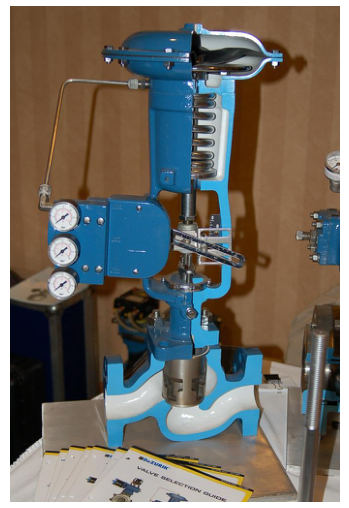
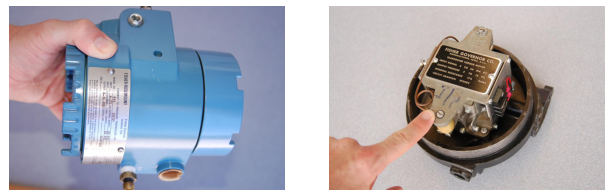
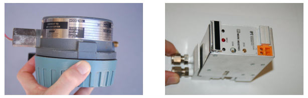
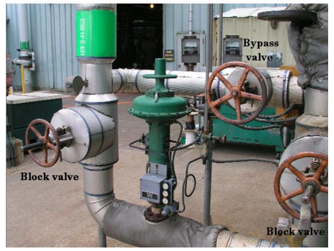
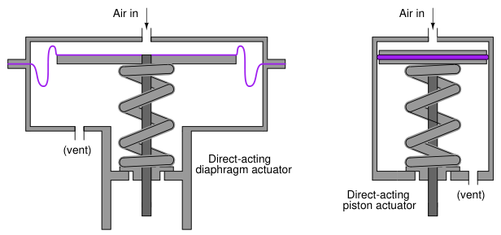
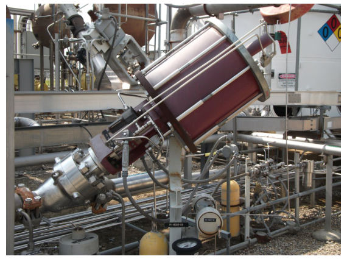
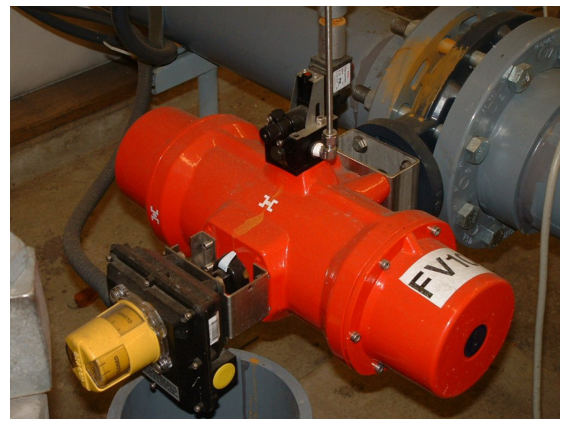
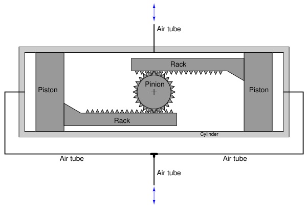
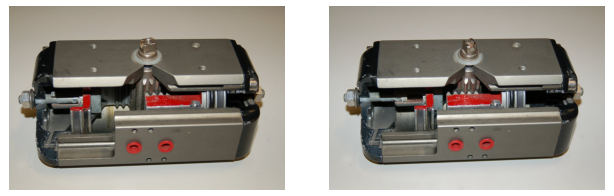
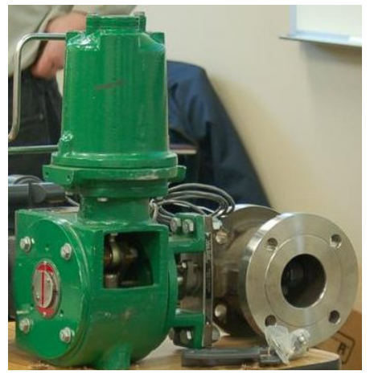

The original, as published: Tony R. Kuphaldt, Lessons In Industrial Instrumentation, Pneumatic actuators. CC BY 4.0, https://creativecommons.org/licenses/by/4.0/. Imported as published, from https://www.ibiblio.org/kuphaldt/socratic/sinst/book/liii.pdf https://www.ibiblio.org/kuphaldt/socratic/sinst/book/liii.pdf
Pneumatic actuators use air pressure pushing against either a flexible diaphragm or a piston to move a valve mechanism. The following photograph shows a cut-away control valve, with a pneumatic diaphragm actuator mounted above the valve body. You can see the large coil spring providing default positioning of the valve (air pressure acting against the diaphragm moves the valve against the spring) and the rubber diaphragm at the very top. Air pressure applied to the bottom side of the diaphragm lifts the sliding stem of the valve in the upward direction, against the spring’s force which tries to push the stem down:

The amount of force (F) in units of pounds generated by any fluid pressing against any surface is equal to the fluid’s pressure (P) in units of PSI multiplied by the surface area (A) in units of square inches (F = PA). In the case of a circular diaphragm, with area equal to πr2, the complete formula for force is F = Pπr2. For example, a control valve diaphragm 14 inches in diameter (radius = 7 inches) with an applied air pressure of 15 PSI generates a linear force of 2309 pounds. Air pressure required to motivate a pneumatic actuator may come directly from the output of a pneumatic process controller, or from a signal transducer (or converter) translating an electrical signal into an air pressure signal. Such transducers are commonly known as I/P or “I to P”
converters, since they typically translate an electric current signal (I) of 4 to 20 mA DC into an air pressure signal (P) of 3 to 15 PSI. The following photographs show I/P transducers of different make and model. A Fisher model
846 appears in the upper-left photograph, while an older Fisher model 546 appears in the upper-right (with cover removed). A Foxboro model E69F I/P appears in the lower-left photograph, while a Moore Industries model IPT appears in the lower-right:


Despite their differing designs and appearances, they all function the same: accepting an analog DC current signal input and a clean supply air pressure of about 20 PSI, outputting a variable air pressure signal proportional to the electric current input. An interesting feature to compare between these four I/P transducers is their relative ruggedness. Every transducer shown except the Moore Industries model (lower-right) is built to withstand direct exposure to a process atmosphere, hence the heavy cast-metal housings and electrical conduit fittings. The Moore Industries unit is intended for a sheltered location, and may be plugged in to a “manifold” with several other I/P transducers to form a compact bank of transducers capable of driving air pressure signals to several valve actuators.
Some pneumatic valve actuators are equipped with handwheels which are used to manually position the valve in the event of air pressure failure. The next photograph shows a sliding-stem control valve with pneumatic diaphragm actuator and a “handwheel” on the top:

Note the three manual valves located around the control valve: two to block flow through the control valve and one to bypass flow around the control valve in the event of control valve failure or maintenance. These manual valves happen to be of the gate design, with rising-stem actuators to clearly show their status (stem protruding = open valve ; stem hidden = closed valve). Such blockand-bypass manual valve arrangements are quite common in the process industries where control valves fulfill critical roles and some form of manual control is needed as an emergency alternative. Note also the air pressure tubing between the valve actuator and the air supply pipe, bent into a loop. This is called a vibration loop, and it exists to minimize strain on the metal tubing from vibration that may occur.
Pneumatic actuators may take the form of pistons rather than diaphragms. Illustrations of each type are shown here for comparison:

Piston actuators generally have longer stroke lengths than diaphragm actuators, and are able to operate on much greater air pressures10. Since actuator force is a function of fluid pressure and actuator area (F = PA), this means piston actuators are able to generate more force than diaphragm actuators of the same diameter. A 14 inch diaphragm operating at a maximum pressure of 35 PSI generates 5388 pounds of force, but the same size piston operating at a maximum pressure of 150 PSI generates 23091 pounds of force. The combination of greater force and greater displacement yields more work potential for piston actuators than diaphragm actuators of equivalent size, since mechanical work is the product of force and displacement (W = Fx). Diaphragm actuators enjoy the definite advantage of less friction than piston actuators. Less friction means greater precision in positioning the valve stem, which gives diaphragm actuators an advantage over piston actuators where precise valve positioning is important, all other factors being equal.
10The greater pressure rating of a piston actuator comes from the fact that the only “soft” component (the sealing ring) has far less surface area exposed to the high pressure than a rolling diaphragm. This results in significantly less stress on the elastic ring than there would be on an elastic diaphragm exposed to the same pressure. There really is no limit to the stroke length of a piston actuator as there is with the stroke length of a diaphragm actuator. It is possible to build a piston actuator miles long, but such a feat would be impossible for a diaphragm actuator, where the diaphragm must stretch (or roll) the entire stroke length.
The following photograph of an ultra-high pressure oxygen valve shows a large pneumatic piston actuating a relatively tiny valve body:

Since the only rationale for selecting such a large piston actuator is to generate large actuating force, we may conclude that this relatively small valve body requires an unusually high force to actuate. This is indeed the case, as the process fluid pressure drop across the valve trim in this application happens to be several thousand PSI. This great of a pressure differential, dropped across even a small valve plug, generates substantial force. The actuator must generate even more force than this in order to successfully move the valve, and must do so while limited to the typical instrument air pressure value of 100 PSI. Thus, the only way for the actuator to generate a superior force to the valve plug while working with much less fluid pressure is for the actuator piston to have a much greater area than the plug.
A double-piston pneumatic actuator appears in the next photograph, providing the mechanical force needed to turn an on/offbutterfly valve:

In this particular actuator design, a pair of pneumatically-actuated pistons move a rack-andpinion mechanism to convert linear piston motion into rotary shaft motion to move the butterfly trim. Note the rotary indicator (yellow in color) at the end of the rotary valve stem, showing what position the butterfly valve is in. Note also the travel switch box (black in color) housing multiple limit switches providing remote indication of valve position to the control room.
A rack-and-pinion mechanism looks like this, as viewed looking into the axis of the rotary shaft:

Compressed air applied to the bottom tube (with the top tube vented) pushes both pistons toward the center, spinning the pinion gear counter-clockwise. Applying compressed air to the top tube (with the bottom tube vented) pushes both pistons outward, rotating the pinion gear clockwise. An example of this actuator design, cut away to reveal its inner workings, appears here:

Another pneumatic piston actuator design uses a simple crank lever instead of a rack-and-pinion gear set to convert linear piston motion into rotary motion. This next photograph shows such a piston actuator connected to a ball valve:

Perhaps the greatest disadvantage of piston actuators as applied to control valves is friction between the piston’s pressure-sealing ring and the cylinder wall. This is not a problem for on/off control valves, but it may be a significant problem for throttling valves where precise positioning is desired. Diaphragm actuators do not exhibit the same degree of friction as piston actuators because the elastic diaphragm rolls and flexes rather than rubs against a stationary surface as is the case with piston sealing rings.